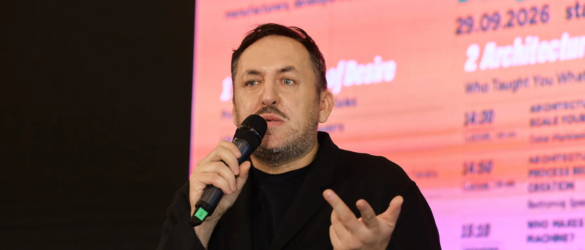
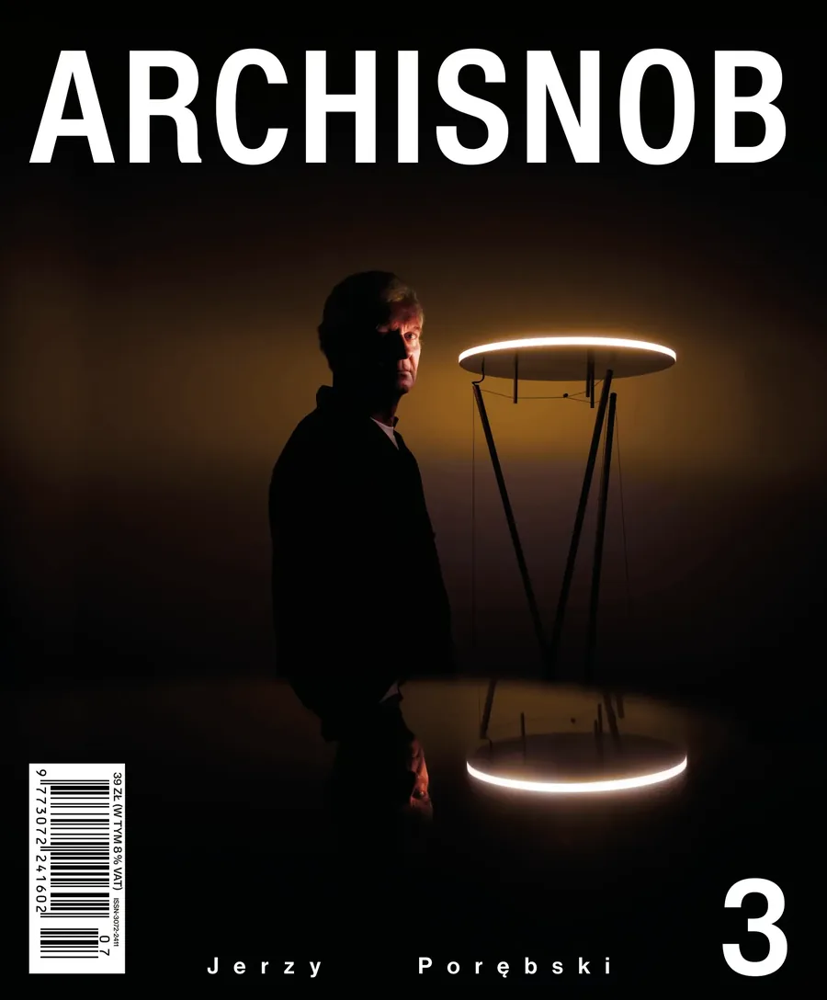
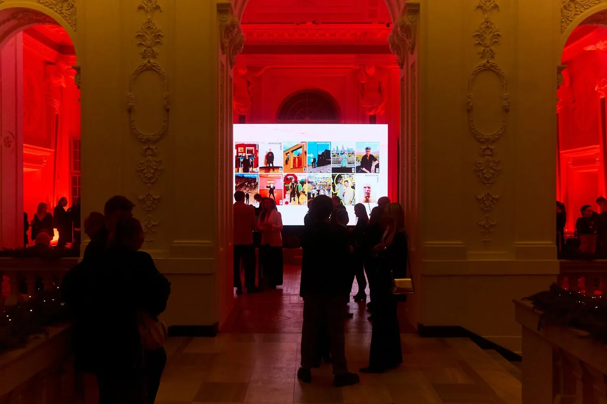
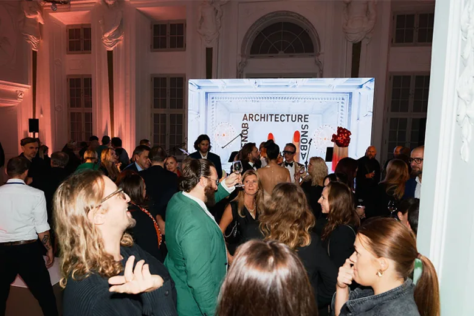
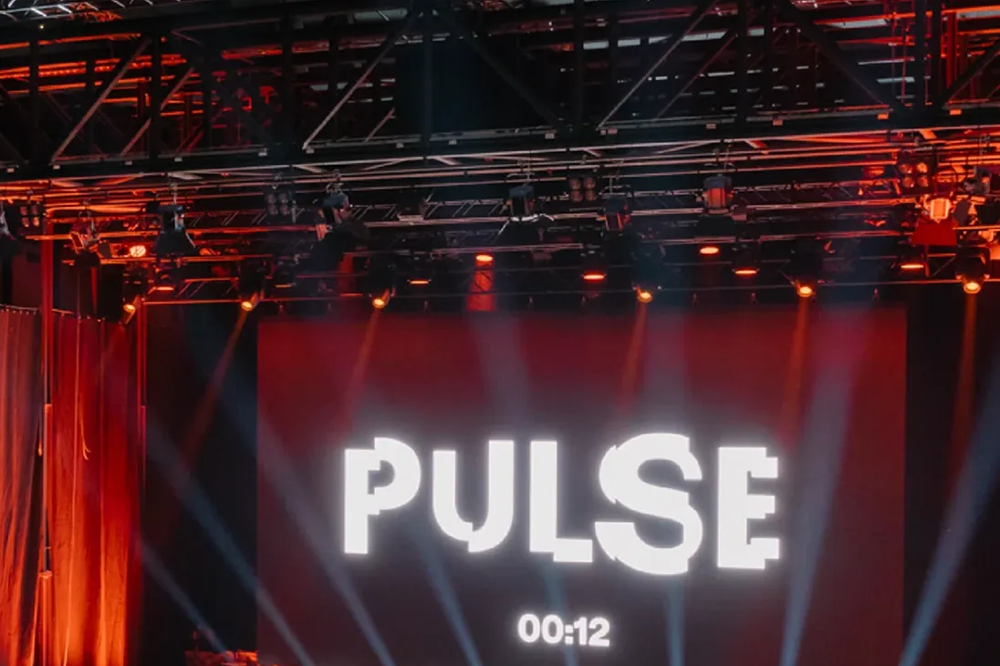
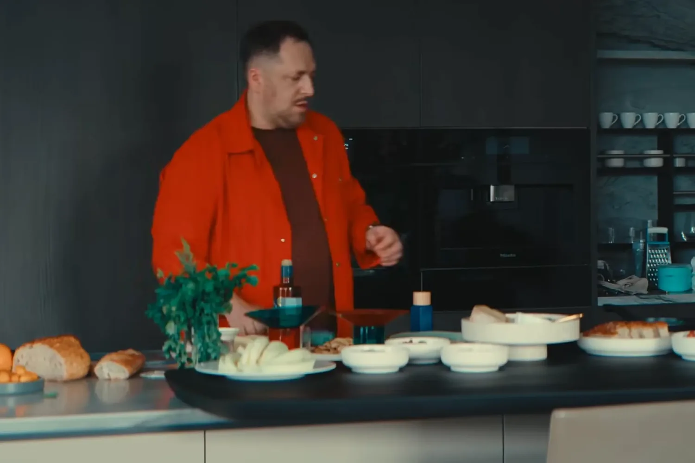
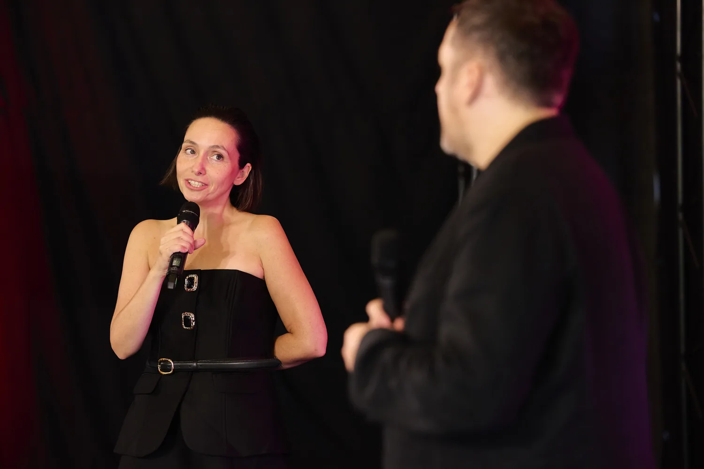
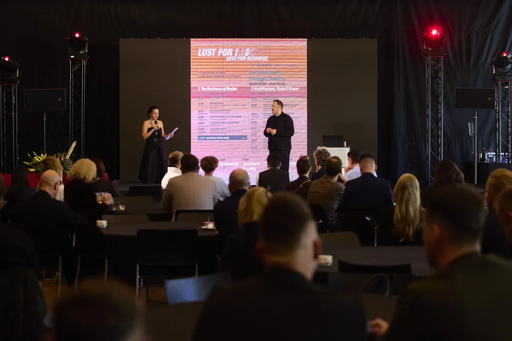

Marcin Szczelina
Architecture Critic & Curator
Warsaw
Marcin Szczelina is an architecture critic and curator based in Warsaw, and the founder and editor-in-chief of ArchiSnob (Architecture Snob). Trained in architecture, he curates exhibitions, festivals and public conversations in Poland and abroad. Since 2014 he has been an expert of the Mies van der Rohe Award. With Hugon Kowalski he created “Let’s Talk About Garbage”, the first Polish project shown in the main exhibition of the Venice Architecture Biennale, and today he curates PULSE, a festival of architecture and design in Central Europe.
- Disciplines
- Architecture criticism, exhibition and festival curating, editorial direction, jury work, talks and conference hosting
Biography
Marcin Szczelina is an architecture critic and curator working in Poland and internationally. He studied architecture and specialises in curating exhibitions, festivals and public conversations that bring architecture closer to a wide audience. He is the founder and editor-in-chief of ArchiSnob (Architecture Snob), an independent, bilingual platform and magazine on architecture, design and the culture of space.
In 2016, together with architect Hugon Kowalski, he created “Let’s Talk About Garbage”, an installation made from 27 tonnes of post-industrial waste. Invited by Alejandro Aravena, the project was shown in “Reporting from the Front”, the main exhibition of the 15th Venice Architecture Biennale, the first time Polish authors were included in it. It later travelled to the European Parliament in Brussels, the Arsenał Municipal Gallery in Poznań and the Silesian Museum in Katowice, where it opened during the COP24 climate summit.
The project became the starting point for Architecture Snob, created at a time when, as he recalls, Polish professional media saw little value in such topics. The magazine launched in 2021 and was presented internationally at the Mies van der Rohe Pavilion in Barcelona. Published in Polish and English, it has featured figures such as Alejandro Aravena and Liu Jiakun, and its issue premieres, recently held at the National Library in Warsaw, gather hundreds of architects, curators and investors.
Since 2014 he has been an expert of the European Union Prize for Contemporary Architecture, the Mies van der Rohe Award, nominating buildings from Poland. In 2020 he curated Katarzyna Krakowiak’s intervention “It begins with one word. Choose your own” at the Mies van der Rohe Pavilion in Barcelona. In 2022 he became the first Pole on the jury of the Simon Architecture Prize, and in 2023 he served as a juror and Advisory Board member for the Czech Pavilion at the Venice Architecture Biennale. He is an expert of the UN Environment Programme’s Climate Leadership Programme and was an ambassador of the LafargeHolcim Awards for sustainable construction.
He curates PULSE, an international festival and platform that maps and connects the creative scene of Central Europe, with editions in Prague and Ostrava. In 2021 he was artistic director of the Warsaw Home & Contract fair. He hosts Salon Warszawski, a show where his two passions, architecture and cooking, meet around the table, and since 2017 he has organised Architects Play for WOŚP, charity auctions supporting the Great Orchestra of Christmas Charity.
His texts have appeared in international magazines such as Domus, Aesthetica and Azure. Together with Wise Habit he develops ArchiSnob events and conferences that connect architecture, design and business, including Lust for Life. Lust for Business. at the SARP headquarters in Warsaw.

Selected Projects
ArchiSnob / Architecture Snob
Founder & editor-in-chief
An independent platform and bilingual magazine on architecture, design and the culture of space. Each issue is built around a theme, such as hope, education, care or taste, and premieres at a cultural event that brings together the architecture community, recently at the National Library in Warsaw. The magazine was presented internationally at the Mies van der Rohe Pavilion in Barcelona in 2021.
View project →


PULSE
Festival curator · Prague and Ostrava
An international festival and platform for architecture and design that maps and connects the creative scene of Central Europe through talks, exhibitions and the PULSE Awards. Recent editions took place in Prague and Ostrava, with speakers such as Kengo Kuma.
View project →
Salon Warszawski
Host · video series
His own show, where architecture meets cooking. In each episode he welcomes a guest from architecture, design or culture and prepares dishes inspired by classic Polish flavours with a modern twist, turning the table into a place for unhurried conversation about today’s architecture.
View project →
Let’s Talk About Garbage
15th Venice Architecture Biennale, 2016 · with Hugon Kowalski
An installation made from 27 tonnes of post-industrial waste for “Reporting from the Front”, the main exhibition curated by Alejandro Aravena, the first time Polish authors were invited to it. Based on research into waste and recycling in Mumbai, the project travelled to the European Parliament, Arsenał Gallery in Poznań and the Silesian Museum in Katowice during COP24.
View project →It Begins With One Word. Choose Your Own
Mies van der Rohe Pavilion, Barcelona, 2020 · Curator
An artistic intervention by Katarzyna Krakowiak in the Barcelona Pavilion, curated by Marcin Szczelina and organised by the Adam Mickiewicz Institute in cooperation with Fundació Mies van der Rohe. It was the first project created in the pavilion by a Polish team.
View project →Lust for Life. Lust for Business.
Co-host · SARP headquarters, Warsaw, 2026
A one-day conference on architecture, design and desire for designers, manufacturers, developers and architects, organised by ArchiSnob and Wise Habit. He opened and closed the day with Marcelina Plichta-Wabnik and Fabrizio Todeschini, led the discussion “From Taste to Value” with Karol Fiedor and premiered the ArchiSnob issue TASTE in the evening.
View project →Warsaw Home & Contract 2021
Artistic director · Ptak Warsaw Expo
As artistic director of the 2021 edition of the fair, themed REUNION, he put sustainable design at the centre of the programme for the first time, aiming to inspire responsible change in design and architecture by sharing good practice.
View project →

Selected Collaborations
-
Fundació Mies van der Rohe
Expert of the Mies van der Rohe Award since 2014, nominating buildings from Poland. Presented Architecture Snob at the Barcelona Pavilion in 2021.
-
Simon Architecture Prize
Member of the 2022 jury, the first Pole to sit on the jury of the prize.
-
Czech Pavilion, Venice Architecture Biennale
Juror and Advisory Board member for the 2023 Czech Pavilion.
-
UN Environment Programme
Expert of the Climate Leadership Programme.
-
LafargeHolcim Foundation
Ambassador of the LafargeHolcim Awards for sustainable construction (2019/2020).
-
Wise Habit
Partner of ArchiSnob: conferences, issue premieres and talks on conscious design, including Lust for Life. Lust for Business.
Awards & Distinctions
-
Property Design Awards 2017 Award for promoting Polish architecture
-
Venice Architecture Biennale 2016 First Polish authors invited to the main exhibition, with Hugon Kowalski
-
Polish Graphic Design Awards 2021 Architecture Snob nominated in the Magazines category
-
Responsible Business in Poland Architecture Snob included in the report as the only magazine, two editions in a row
Publications & Press
- e-flux Katarzyna Krakowiak: It begins with one word. Choose your own ↗︎
- Culture.pl 7 Polish attractions at the Venice Architecture Biennale 2016 ↗︎
- LafargeHolcim Foundation Getting personal about architecture: Curating Architecture talk, Berlin ↗︎
- Fundació Mies van der Rohe Poland Now. Architecture Snob: presentation in Barcelona ↗︎
- ESTAV.cz PULSE Prague 2025 festival (in Czech) ↗︎
-
Domus · Aesthetica · Azure Author and co-author of articles